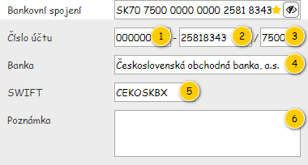
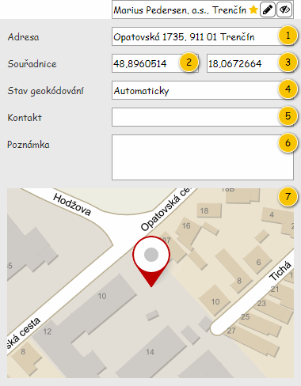

Stručný popis
Panel Detail zákazníka slouží k zobrazení údajů o entitě Zákazník.
Uživatelské rozhraní
Rozložení
Drátový diagram

Přehled UI komponent
| Callout | Komponenta (podnikatel) | Nadpis (podnikatel) | Komponenta (nepodnikatel) | Nadpis (nepodnikatel) | Typ komponenty | Příklad hodnoty | Hodnota | Výchozí hodnota | Formát | Zpřístupněná | Viditelná | Chování | Validace | Poznámka |
|---|---|---|---|---|---|---|---|---|---|---|---|---|---|---|
| 1 | Typ zákazníka | – | Typ zákazníka | – | Label | Podnikatel | Entita Zákazník. | – | – | Vždy | – | – | – | |
| 2 | Název | – | Název | – | Label | Marius Pedersen, a.s. | Entita Zákazník. | – | – | Vždy | – | – | – | |
| 3 | Sídlo | Sídlo | Adresa | Adresa | Label | Opatovská 1735, 911 01 Trenčín | Entita Adresa – atribut Adresa sídla entity Zákazník. | – | Pokud není dostupné Číslo orientační:
Pokud není dostupné Číslo popisné:
| – | Vždy | – | – | – |
| 4 | Právní forma | Právní forma | – | – | Label | Akciová společnost | Entita Právní forma – atribut Právní forma entity Zákazník. | – | – | Vždy | – | – | – | |
| 5 | IČO | IČO | Číslo OP | Číslo OP | Label | 34115901 | Entita Zákazník. | – | – | Vždy | – | – | – | |
| 6 | DIČ | DIČ | – | – | Label | 2020386148 | Entita Zákazník. | – | – | Vždy | – | – | – | |
| 7 | IČ DPH | IČ DPH | – | – | Label | SK2020386148 | Entita Zákazník. | – | – | Vždy | – | – | – | |
| 8 | Plátce DPH | Plátce DPH | – | – | CheckBox | TRUE | Entita Zákazník. | – | Nikdy | Vždy | – | – | – | |
| 9 | Poznámka | Poznámka | Poznámka | Poznámka | Label | Doplnit statutární zástupce! | Entita Zákazník. | – | – | Vždy | – | – | – | |
| 10 | Osoby zákazníka | Osoby zákazníka | Osoby zákazníka | Osoby zákazníka | Panel osob zákazníka | Simon Hovgaard Clausen | Entita Osoba zákazníka. | Ve výchozím stavu je panel v režimu Zobrazený. | – | – | Pokud je obsažena alespoň jedna Osoba zákazníka. | – | – | Jedná se o kolekci, může tedy být zobrazeno více Osob zákazníka zároveň. |
| 11 | Bankovní spojení | Bankovní spojení | Bankovní spojení | Bankovní spojení | Panel bankovních spojení | SK70 7500 0000 0000 2581 8343 | Entita Bankovní spojení. | Ve výchozím stavu je panel v režimu Zobrazený. | – | – | Pokud je obsaženo alespoň jedno Bankovní spojení. | – | – | Jedná se o kolekci, může tedy být zobrazeno více Bankovních spojení zároveň. |
| 12 | Místa realizace | Místa realizace | Místa realizace | Místa realizace | Panel míst realizace | Marius Pedersen, a.s., Trenčín | Entita Místo realizace. | Ve výchozím stavu je panel v režimu Zobrazený. | – | – | Pokud je obsaženo alespoň jedno Místo realizace. | – | – | Jedná se o kolekci, může tedy být zobrazeno více Míst realizace zároveň. |
Chování
Postupné načítání položek
V detailu Zákazníka jsou využívány komponenty, které umožňují zobrazit kolekci položek určitého typu, konkrétně se jedná o následující entity:
- Osoba zákazníka (komponenta 10),
- Bankovní spojení (komponenta 11),
- Místo realizace (komponenta 12).
Reálně však může nastat situace, kdy má být v rámci této komponenty načteno velké množství údajů – to způsobí znepřístupnění („zamrznutí“) celého detailu. Proto bude v rámci těchto komponent použito postupné načítání obsahu – je načtena pouze část položek, ostatní jsou postupně načítány až ve chvíli, kdy uživatel provede posunutí v rámci přehledu.
- Při zobrazení detailu je dán maximální počet položek, který bude načten pro uvedené přehledy (customerDetailBatchSize, viz ). Pokud počet odpovídajících položek tuto hodnotu nepřekračuje, jsou načteny všechny položky. Při dosažení konce přehledu (uživatel se v rámci přehledu posune tak, že dosáhne na poslední načtenou položku) bude načtena další dávka položek, jejich množství je pak stejné jako při prvotním načtení. Načítání pak probíhá do doby, kdy je dosaženo poslední dostupné položky přehledu.
- Posuvník je pak v rámci přehledu zobrazen ve chvíli, kdy počet načtených položek přesáhne mezní hodnotu (customerDetailMaxCount, viz ).
Poznámka k revizi: Původní text byl přeformulován. Ke změně oproti původnímu chování pak došlo především v počtu načítaných položek a počtu položek, při kterém není zobrazen posuvník v rámci přehledu.
Zobrazení detailu
U hodnoty je k dispozici tlačítko pro zobrazení/skrytí detailu položky. Tlačítko se chová následovně:
- Je zobrazen detail položky – detail položky se skryje.
- Je zobrazen detail jiné položky ve skupině – detail jiné položky ve skupině se skryje a zobrazí se detail požadované položky.
- Není zobrazen detail položky – zobrazí se detail položky.
Poznámka: Ikona pro zobrazení/skrytí detailu položky obsahuje ikonu v závislosti na tom, zda je zobrazen detail této položky.
- Detail je zobrazen: ra-eye-crossed.
- Detail není zobrazen: ra-eye.
Editace místa realizace
U hodnoty je k dispozici tlačítko, které slouží ke spuštění editace Místa realizace – spustí 500UC08: Upravit místo realizace, na vstup jsou pak předány následující hodnoty:
- Místo realizace: odpovídající Místo realizace, pro které byla spuštěna editace.
- Úplná editace – získáno dle konkrétního Zákazníka, pro kterého je detail zobrazen:
- Pokud má Zákazník přiřazen externí identifikátor (hodnota atributu Externí identifikátor je různá od NULL): FALSE.
- Jinak je vstupní hodnota získána dle toho, zda byl Zákazník již odeslán ke kontrole:
- Pokud byl Zákazník odeslán ke kontrole (hodnota atributu Odeslán ke kontrole je TRUE): FALSE.
- Jinak: TRUE.
V rámci tlačítka je pak zobrazena ikona: ra-pencil.
Panel osob zákazníka
Jednotlivé Osoby zákazníka jsou umístěny v rámci rozbalovacího panelu. Jedná se pak o komponentu 701UC05: Zobrazit rozbalovací panel, kdy jsou vstupní parametry nastaveny následovně:
- Obsah hlavičky: viz Hlavička panelu s osobami zákazníka.
- Obsah panelu: viz Obsah panelu s osobami zákazníka.
- Je rozbalený: hodnota získána v rámci uživatelského nastavení (pokud není k dispozici, předáno TRUE).
K dispozici jsou pak takové Osoby zákazníka, které splňují všechny dále uvedené podmínky zároveň:
- Hodnota atributu Zákazník odpovídá Zákazníkovi, který je načten v panelu.
- Hodnota atributu Je aktivní je nastavena na TRUE.
Při velkém množství záznamů jsou záznamy načítány postupně, viz Postupné načítání položek.
Hlavička panelu s osobami zákazníka
Hlavička panelu osahuje nadpis a rychlý textový filtr, rozložení je pak naznačeno ve formě drátového diagramu.

Popis jednotlivých komponent je k dispozici v tabulce s přehledem UI komponent.
| Pořadí | Komponenta | Nadpis | Typ komponenty | Příklad hodnoty | Hodnota | Výchozí hodnota | Formát | Bublinková nápověda | Zpřístupněná | Viditelná | Chování | Validace | Poznámka |
|---|---|---|---|---|---|---|---|---|---|---|---|---|---|
| 1 | Nadpis panelu | – | Label | – | Prostý text:
| – | – | – | – | Vždy | – | – | – |
| 2 | Textový filtr | – | SearchBox | – | – | – | Pokud není v rámci ovládacího prvku zadán hledaný text, jsou na pozadí (placeholder) vypsány názvy sloupců, podle kterých je filtrováno (viz sloupce Chování). Mezi jednotlivými názvy sloupců je použit oddělovač: „/“. Tento text je zobrazován i v rámci bublinkové nápovědy ovládacího prvku. | Viz sloupec Formát. | Vždy | Vždy | Psaním filtruje Osoby zákazníka dle těchto atributů (fulltext):
Pokud není zadán žádný text, jsou k dispozici všechny záznamy. | – | – |
Obsah panelu s osobami zákazníka
Jednotlivé záznamy jsou zobrazeny ve formě seznamu, struktura dílčích položek je pak naznačena ve formě drátového diagramu.

Popis jednotlivých komponent je k dispozici v tabulce s přehledem UI komponent.
| Pořadí | Komponenta | Nadpis | Typ komponenty | Příklad hodnoty | Hodnota | Výchozí hodnota | Formát | Bublinková nápověda | Zpřístupněná | Viditelná | Chování | Validace | Poznámka |
|---|---|---|---|---|---|---|---|---|---|---|---|---|---|
| 1 | Název zákazníka | – | Label | Ondřej Kulhavý | Entita Osoba zákazníka. | – | – | – | Vždy | – | – | – | |
| 2 | Indikace statutárního zástupce | – | Label
Barva ikony je určena dle dané Osoby zákazníka:
| – | – | – | – | Statutární zástupce | – | Pokud je hodnota atributu Je podnikatel odpovídajícího Zákazníka nastavena na TRUE. | – | – | – |
| 3 | Indikace kontaktní osoby | – | Label
Barva ikony je určena dle dané Osoby zákazníka:
| – | – | – | – | Kontaktní osoba | – | Vždy | – | – | – |
| 4 | Zobrazení detailu | – | ToggleButton
| – | – | Ve výchozím stavu není panel s detailem zobrazen (tlačítko není stisknuto). | – | – | Vždy | Vždy | Struktura panelu s detailem je popsána samostatně, viz Detail osoby zákazníka. | – | Panel s detailem může být současně zobrazen pro maximálně jednu položku. |
Panel bankovních spojení
Jednotlivá Bankovní spojení jsou umístěna v rámci rozbalovacího panelu. Jedná se pak o komponentu 701UC05: Zobrazit rozbalovací panel, kdy jsou vstupní parametry nastaveny následovně:
- Obsah hlavičky: viz Hlavička panelu s bankovními spojeními.
- Obsah panelu: viz Obsah panelu s bankovními spojeními.
- Je rozbalený: hodnota získána v rámci uživatelského nastavení (pokud není k dispozici, předáno TRUE).
K dispozici jsou pak taková Bankovní spojení, která splňují všechny dále uvedené podmínky zároveň:
- Hodnota atributu Zákazník odpovídá Zákazníkovi, který je načten v panelu.
- Hodnota atributu Je aktivní je nastavena na TRUE.
Při velkém množství záznamů jsou záznamy načítány postupně, viz Postupné načítání položek.
Hlavička panelu s bankovními spojeními
Hlavička panelu osahuje nadpis a rychlý textový filtr, rozložení je pak naznačeno ve formě drátového diagramu.

Popis jednotlivých komponent je k dispozici v tabulce s přehledem UI komponent.
| Pořadí | Komponenta | Nadpis | Typ komponenty | Příklad hodnoty | Hodnota | Výchozí hodnota | Formát | Bublinková nápověda | Zpřístupněná | Viditelná | Chování | Validace | Poznámka |
|---|---|---|---|---|---|---|---|---|---|---|---|---|---|
| 1 | Nadpis panelu | – | Label | – | Prostý text:
| – | – | – | – | Vždy | – | – | – |
| 2 | Textový filtr | – | SearchBox | – | – | – | Pokud není v rámci ovládacího prvku zadán hledaný text, jsou na pozadí (placeholder) vypsány názvy sloupců, podle kterých je filtrováno (viz sloupce Chování). Mezi jednotlivými názvy sloupců je použit oddělovač: „/“. Tento text je zobrazován i v rámci bublinkové nápovědy ovládacího prvku. | Viz sloupec Formát. | Vždy | Vždy | Psaním filtruje Bankovní spojení dle těchto atributů (fulltext):
Pokud není zadán žádný text, jsou k dispozici všechny záznamy. | – | – |
Obsah panelu s bankovními spojeními
Jednotlivé záznamy jsou zobrazeny ve formě seznamu, struktura dílčích položek je pak naznačena ve formě drátového diagramu.

Popis jednotlivých komponent je k dispozici v tabulce s přehledem UI komponent.
| Pořadí | Komponenta | Nadpis | Typ komponenty | Příklad hodnoty | Hodnota | Výchozí hodnota | Formát | Bublinková nápověda | Zpřístupněná | Viditelná | Chování | Validace | Poznámka |
|---|---|---|---|---|---|---|---|---|---|---|---|---|---|
| 1 | IBAN | – | Label | CZ70 7500 0000 0000 2581 5858 | Entita Bankovní spojení. | – | Hodnota je zobrazena v uvedeném formátu: IBAN (viz Používané formáty zobrazení údajů). | – | – | Vždy | – | – | – |
| 2 | Indikace výchozího bankovního spojení | – | Label
| – | – | – | – | Výchozí | – | Dané Bankovní spojení je odkazováno v rámci atributu Výchozí bankovní spojení právě zobrazeného Zákazníka. | – | – | – |
| 3 | Zobrazení detailu | – | ToggleButton
| – | – | Ve výchozím stavu není panel s detailem zobrazen (tlačítko není stisknuto). | – | – | Vždy | Vždy | Struktura panelu s detailem je popsána samostatně, viz Detail bankovního spojení. | – | Panel s detailem může být současně zobrazen pro maximálně jednu položku. |
Panel míst realizace
Jednotlivá Místa realizace jsou umístěna v rámci rozbalovacího panelu. Jedná se pak o komponentu 701UC05: Zobrazit rozbalovací panel, kdy jsou vstupní parametry nastaveny následovně:
- Obsah hlavičky: viz Hlavička panelu s místy realizace.
- Obsah panelu: viz Obsah panelu s místy realizace.
- Je rozbalený: hodnota získána v rámci uživatelského nastavení (pokud není k dispozici, předáno TRUE).
K dispozici jsou pak taková Místa realizace, která splňují všechny dále uvedené podmínky zároveň:
- Hodnota atributu Zákazník odpovídá Zákazníkovi, který je načten v panelu.
- Hodnota atributu Je aktivní je nastavena na TRUE.
- Uživatel má oprávnění na dané Místo realizace (vyhodnoceno dle uživateli dostupných instancí entit, viz Uživatelská oprávnění a role).
Při velkém množství záznamů jsou záznamy načítány postupně, viz Postupné načítání položek.
Hlavička panelu s místy realizace
Hlavička panelu osahuje nadpis a rychlý textový filtr, rozložení je pak naznačeno ve formě drátového diagramu.

Popis jednotlivých komponent je k dispozici v tabulce s přehledem UI komponent.
| Pořadí | Komponenta | Nadpis | Typ komponenty | Příklad hodnoty | Hodnota | Výchozí hodnota | Formát | Bublinková nápověda | Zpřístupněná | Viditelná | Chování | Validace | Poznámka |
|---|---|---|---|---|---|---|---|---|---|---|---|---|---|
| 1 | Nadpis panelu | – | Label | – | Prostý text:
| – | – | – | – | Vždy | – | – | – |
| 2 | Textový filtr | – | SearchBox | – | – | – | Pokud není v rámci ovládacího prvku zadán hledaný text, jsou na pozadí (placeholder) vypsány názvy sloupců, podle kterých je filtrováno (viz sloupce Chování). Mezi jednotlivými názvy sloupců je použit oddělovač: „/“. Tento text je zobrazován i v rámci bublinkové nápovědy ovládacího prvku. | Viz sloupec Formát. | Vždy | Vždy | Psaním filtruje Místa realizace dle těchto atributů (fulltext):
Pokud není zadán žádný text, jsou k dispozici všechny záznamy. | – | – |
Obsah panelu s místy realizace
Jednotlivé záznamy jsou zobrazeny ve formě seznamu, struktura dílčích položek je pak naznačena ve formě drátového diagramu.

Popis jednotlivých komponent je k dispozici v tabulce s přehledem UI komponent.
| Pořadí | Komponenta | Nadpis | Typ komponenty | Příklad hodnoty | Hodnota | Výchozí hodnota | Formát | Bublinková nápověda | Zpřístupněná | Viditelná | Chování | Validace | Poznámka |
|---|---|---|---|---|---|---|---|---|---|---|---|---|---|
| 1 | Indikace chybějících souřadnic | – | Label
| – | – | – | – | U místa realizace nejsou vyplněny souřadnice. | – | Hodnota atributu Souřadnice daného Místa realizace není k dispozici. | – | – | – |
| 2 | Název místa realizace | – | Label | Drozdice, Pardubická (BIO Farma Kulhavý) | Entita Místo realizace. | – | – | – | Vždy | – | – | – | |
| 3 | Indikace výchozího místa realizace | – | Label
| – | – | – | – | Výchozí | – | Dané Místo realizace je odkazováno v rámci atributu Výchozí místo realizace právě zobrazeného Zákazníka. | – | – | – |
| 4 | Zobrazení detailu | – | ToggleButton
| – | – | Ve výchozím stavu není panel s detailem zobrazen (tlačítko není stisknuto). | – | – | Vždy | Vždy | Struktura panelu s detailem je popsána samostatně, viz Detail místa realizace. | – | Panel s detailem může být současně zobrazen pro maximálně jednu položku. |
| 5 | Editace místa realizace | – | Button
| – | – | – | – | – | Vždy | Jsou splněny vstupní podmínky pro UC volaný v rámci Editace místa realizace. | Po stisknutí tlačítka dojde ke spuštění Editace místa realizace. | – | – |
Detail osoby zákazníka
Drátový diagram

Přehled UI komponent
| Callout | Komponenta | Nadpis | Typ komponenty | Příklad hodnoty | Hodnota | Výchozí hodnota | Formát | Zpřístupněná | Viditelná | Chování | Validace | Poznámka |
|---|---|---|---|---|---|---|---|---|---|---|---|---|
| 1 | Telefon | Telefon | Label | 0902 123 456 | Entita Osoba zákazníka. | – | – | Vždy | – | – | – | |
| 2 | Label | hrasko.jan@post.sk | Entita Osoba zákazníka. | – | – | Vždy | – | – | – |
Detail bankovního spojení
Drátový diagram

Přehled UI komponent
| Callout | Komponenta | Nadpis | Typ komponenty | Příklad hodnoty | Hodnota | Výchozí hodnota | Formát | Zpřístupněná | Viditelná | Chování | Validace | Poznámka |
|---|---|---|---|---|---|---|---|---|---|---|---|---|
| 1 | Předčíslí čísla účtu | Číslo účtu | Label | 000000 | Entita Bankovní spojení. | – | – | Vždy | – | – | Mezi předčíslím a číslem účtu je uveden znak '-'. | |
| 2 | Číslo účtu | – | Label | 25818343 | Entita Bankovní spojení. | – | <Číslo účtu> | – | Vždy | – | – | Mezi číslem účtu a kódem banky je uveden znak '/'. |
| 3 | Kód banky | – | Label | 7500 | Entita Banka – atribut Banka entity Bankovní spojení. | – | – | Vždy | – | – | – | |
| 4 | Název banky | Banka | Label | Československá obchodná banka, a.s. | Entita Banka – atribut Banka entity Bankovní spojení. | – | – | Vždy | – | – | – | |
| 5 | SWIFT | SWIFT | Label | CEKOSKBX | Entita Banka – atribut Banka entity Bankovní spojení. | – | – | Vždy | – | – | – | |
| 6 | Poznámka | Poznámka | Label | Bankovní spojení pro vrácení zálohy. | Entita Bankovní spojení. | – | – | Vždy | – | – | – |
Detail místa realizace
Drátový diagram

Přehled UI komponent
| Callout | Komponenta | Nadpis | Typ komponenty | Příklad hodnoty | Hodnota | Výchozí hodnota | Formát | Zpřístupněná | Viditelná | Chování | Validace | Poznámka |
|---|---|---|---|---|---|---|---|---|---|---|---|---|
| 1 | Adresa | Adresa | Label | Opatovská 1735, 911 01 Trenčín | Entita Adresa atribut Adresa entity Místo realizace. | – | Pokud není dostupné Číslo orientační:
Pokud není dostupné Číslo popisné:
| – | Vždy | – | – | – |
| 2 | Zeměpisná šířka | Souřadnice | Label | 48,8960514 | Entita Místo realizace. | – | – | Vždy | – | – | – | |
| 3 | Zeměpisná délka | – | Label | 18,0672664 | Entita Místo realizace. | – | – | Vždy | – | – | – | |
| 4 | Stav geokódování | Stav geokódování | Label | Automaticky | Entita Místo realizace. | – | – | Vždy | – | – | – | |
| 5 | Kontakt | Kontakt | Label | 0902 123 456 | Entita Místo realizace. | – | – | Vždy | – | – | – | |
| 6 | Poznámka | Poznámka | Label | Nezpevněný povrch. | Entita Místo realizace. | – | – | Vždy | – | – | – | |
| 7 | Mapa | – | Map | – | Entita Místo realizace. | – | – | Nikdy | Pokud jsou k dispozici validní souřadnice. | Bod v mapě je vycentrován. | – | – |
Uživatelská nastavení
V rámci obrazovky jsou použita Uživatelská nastavení klienta. Prvky, u kterých je ukládáno uživatelské nastavení, jsou pak uvedeny ve formě tabulky. Jejich výchozí hodnota odpovídá popisu uživatelského rozhraní.
| Funkční celek | Ukládaná hodnota | Poznámka |
|---|---|---|
| Panel osob zákazníka | Režim zobrazení panelu. | – |
| Panel bankovních spojení | Režim zobrazení panelu. | – |
| Panel míst realizace | Režim zobrazení panelu. | – |
Grafický návrh
Revize
30. 9. 2024: Tomáš Nadrchal
| Odkaz | Stručný popis změny/doplnění |
|---|---|
| Přehled UI komponent | Revize ovládacích prvků pro osoby zákazníka, bankovní spojení a místa realizace (naznačeno modře). |
| Doplněn panel pro zobrazení osob zákazníka (naznačeno modře). | |
| Panel bankovních spojení | Doplněn panel pro zobrazení bankovních spojení (naznačeno modře). |
| Panel míst realizace | Doplněn panel pro zobrazení míst realizace (naznačeno modře). |
| Uživatelské nastavení | Doplněno uživatelské nastavení panelu (naznačeno modře). |
7. 9. 2023: Tomáš Nadrchal
| Odkaz | Stručný popis změny/doplnění |
|---|---|
| Přehled UI komponent | Revize dostupných míst realizace (naznačeno modře). |
| Dostupná místa realizace | Logika pro vyhodnocení dostupných míst realizace (naznačeno modře). |
15. 5. 2020: Tomáš Nadrchal
| Odkaz | Stručný popis změny/doplnění |
|---|---|
| Přehled UI komponent | Změna pozice pole pro zadání poznámky (naznačeno modře). |
| Postupné načítání položek | Provedena revize chování dle aktuálních požadavků (naznačeno modře). |
30. 7. 2019: Tomáš Nadrchal
| Odkaz | Stručný popis změny/doplnění |
|---|---|
| Přehled UI komponent | Doplněno informace, u kterých položek je požadováno postupné načítání položek (naznačeno modře). |
| Postupné načítání položek | Doplněn popis chování pro načítání velkého množství položek. |
14. 5. 2019: Tomáš Nadrchal
| Odkaz | Stručný popis změny/doplnění |
|---|---|
| Rozložení | Doplněna indikace chyby pro Místa realizace. |
| Editace místa realizace | Doplněna možnost editace Místa realizace. |
| Detail místa realizace | Doplněno pole pro zobrazení stavu geokódování Místa realizace. |